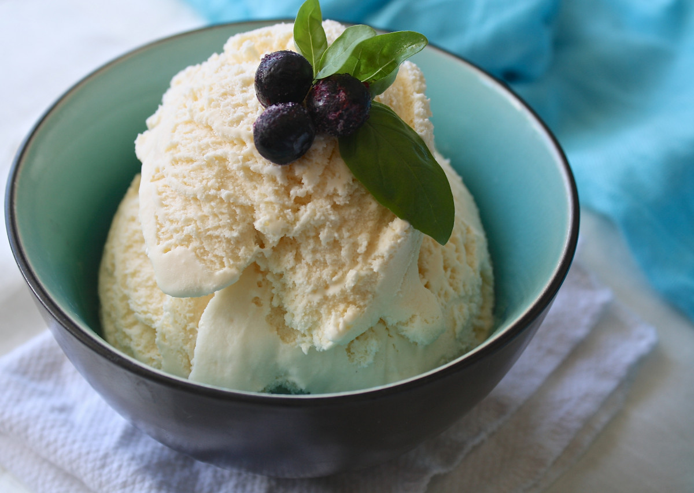

Honey Vanilla Ice Cream

Picture taken from
here. It has nothing to
do with the recipe.
Description
How to make some Honey Vanilla Ice Cream.
- Prep time: 5 min, + 2 hours minimum chill time
- “Cook” time: 30 min + overnight chill time
- Servings: 8-10
Ingredients
- 1 pint heavy cream
- 1 cup milk (whole milk recommended)
- 2 Tbsp vanilla extract
- 1/2 cup honey
- 1 cup sugar
Steps
- Add milk and sugar to medium sized bowl and mix until dissolved.
- Add heavy cream and vanilla extract and mix.
- Stir in honey.
- Chill in refrigerator for at least 2 hours.
- Add to ice cream maker and let it go for 30 minutes.
-
Swiftly remove from ice cream maker (I use a silicone spatula as it
allows for sides to be scraped down) and put into container.
-
Freeze ice cream overnight - a few hours will do in a pinch but
overnight is better.
- Scoop out of container and serve! Goes great with honey cake.
Home